Power · Metro · Utility Infrastructure
Factory-direct removable cable trench cover moulds — lift-handle power cable duct covers for substations and utility corridors, plus metro/subway and deep-burial tunnel trough covers. PP & ABS, standard sizes and OEM from drawings.
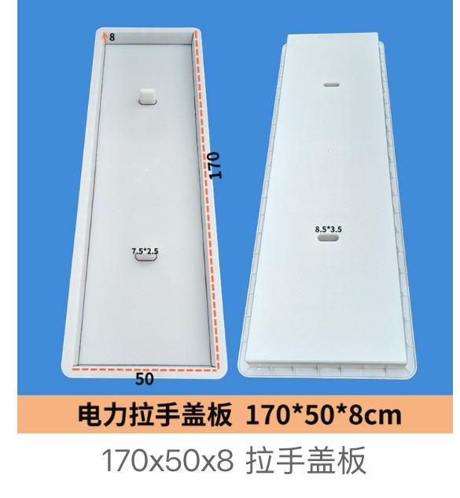
Cable trench covers protect underground power and telecom cables while giving maintenance crews repeatable, removable access. Our moulds precast the concrete cover slabs that seat on top of a cable trench — most with moulded lift handles or lifting slots so the slab can be lifted for cable pulling and inspection, then seated flush again.
The range covers everyday lift-handle power/utility covers from 60×40 to 170×50cm, notched and cobblestone-tread variants, plus heavy ABS metro/subway platform covers and 20–26cm deep-burial tunnel trough covers, including multi-part T-junction assembly sets supplied with demoulding diagrams. Standard catalogue sizes and OEM designs from your drawings or sample photos can both be reviewed before quotation.
17 qualified cover specs in two groups. More sizes, tread patterns and OEM profiles can be quoted from drawings or sample photos.
Removable lift-handle cover moulds for power and cable trenches. Built-in lifting slots or handles let maintenance crews open the duct for cable pulling and inspection, then seat it flush. Sizes from 60×40 to 170×50cm in PP or ABS.
170×50×8cm reinforced PP/ABS cable trench cover with formed lifting slots (8.5×3.5cm) for substation and power corridor trenches.
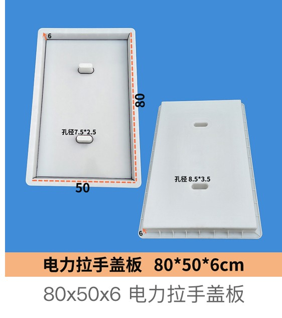
80×50×6cm cable duct cover with two lifting-hole patterns (7.5×2.5 / 8.5×3.5cm) for removable power cable trench access.
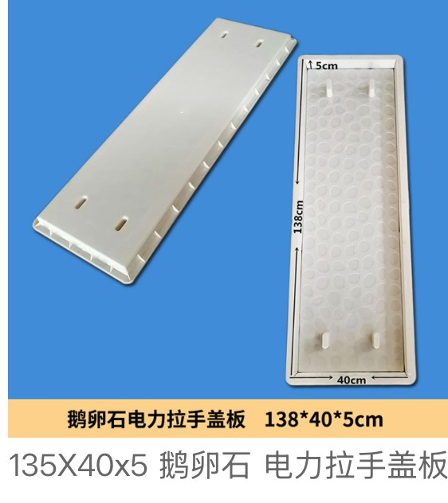
138×40×5cm anti-slip cobblestone-tread power cable cover mould for walk-over utility trenches.
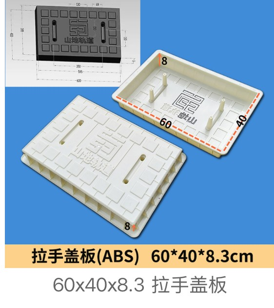
60×40×8.3cm heavy ABS lift-handle cover mould for service and cable ducts needing frequent inspection.
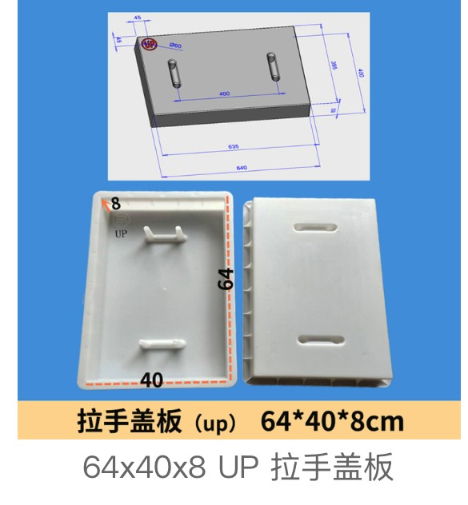
64×40×8cm cover mould moulded with an UP orientation mark so installers place the lift face correctly.
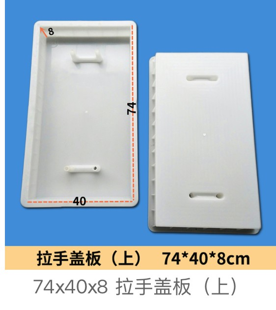
74×40×8cm removable trench cover mould with integral lift points for utility and cable corridors.
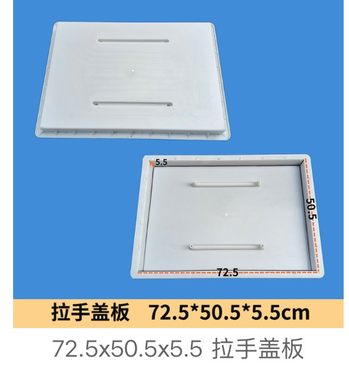
72.5×50.5×5.5cm wide-format lift cover mould for municipal cable and service trenches.
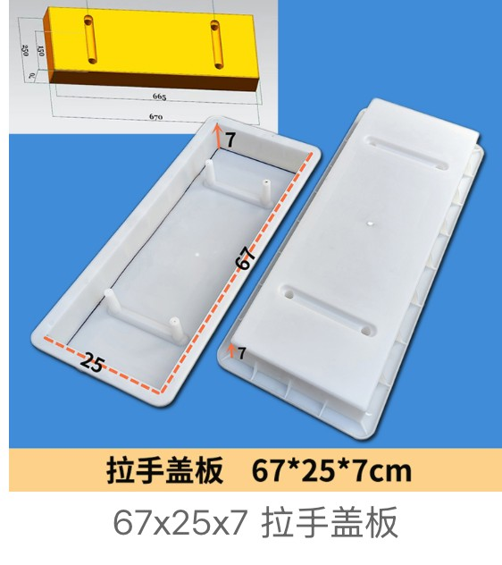
67×25×7cm narrow-width lift cover mould for single-run cable ducts and narrow utility channels.
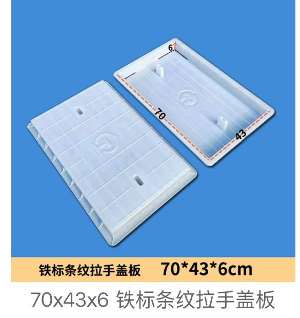
70×43×6cm railway-standard (Tie Biao) striped anti-slip lift cover mould for rail-side cable trenches.
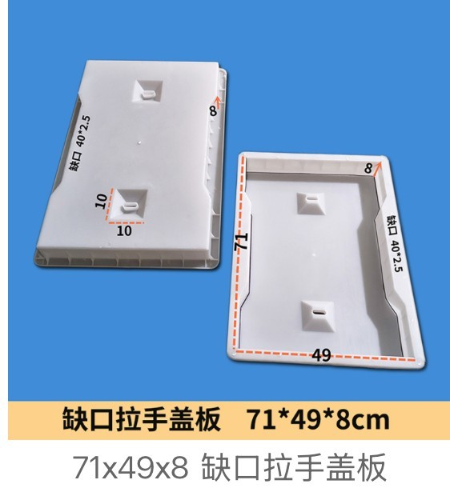
71×49×8cm notched lift cover mould; the side notch is moulded (not cut on site) for frame clearance.
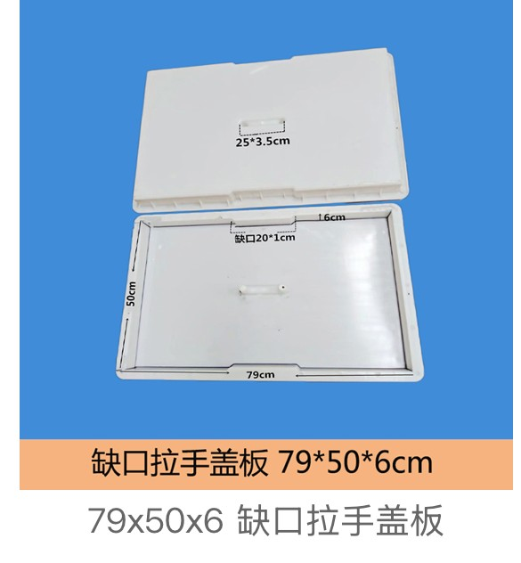
79×50×6cm notched lift cover mould with a 20×1cm moulded notch for cable trench frame seating.
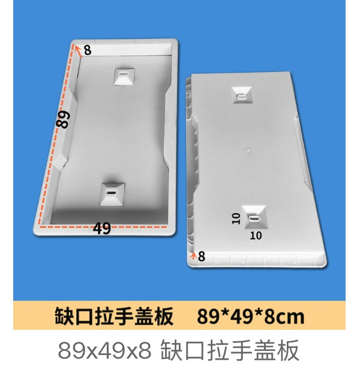
89×49×8cm heavy notched lift cover mould for wide cable trenches that need removable inspection access.
Extra-thick cover moulds for metro, subway and deep-burial tunnel cable/drainage troughs, including multi-part T-junction assembly sets supplied with demoulding diagrams. Large panels (100–149cm) and 20–26cm deep sections use ABS for rigidity.
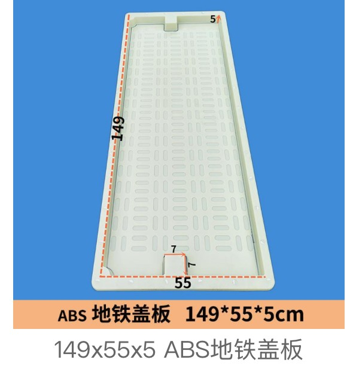
149×55×5cm ABS metro platform/underpass trench cover mould, dimensioned for subway cable and drainage troughs.
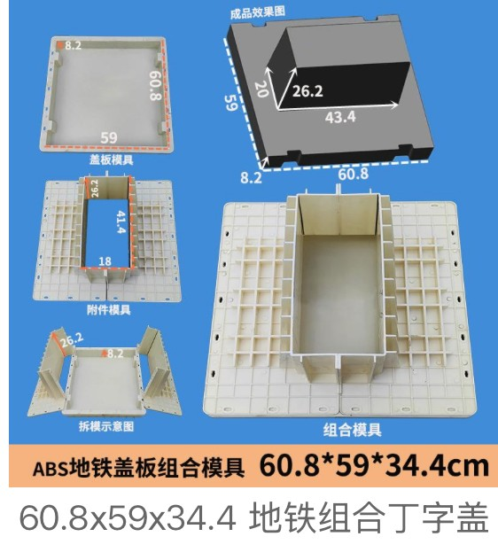
60.8×59×34.4cm multi-part metro T-junction cover assembly mould, shown with cover mould, accessory mould and demoulding diagram.
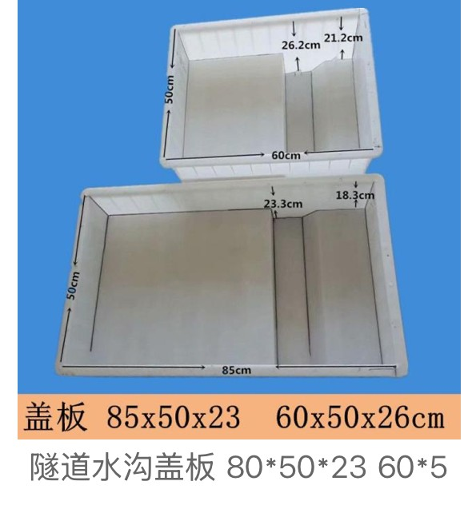
60×50×26cm ultra-thick deep-burial tunnel cover mould (also 85×50×23 / 80×50×23) for tunnel cable and drainage troughs.
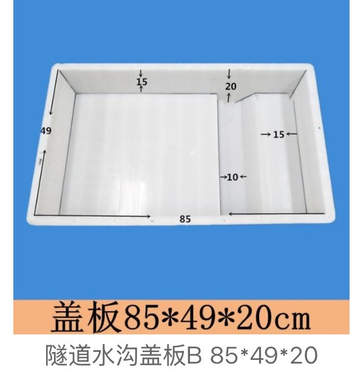
85×49×20cm heavy tunnel trough cover mould (type B) for deep railway and road tunnel service trenches.
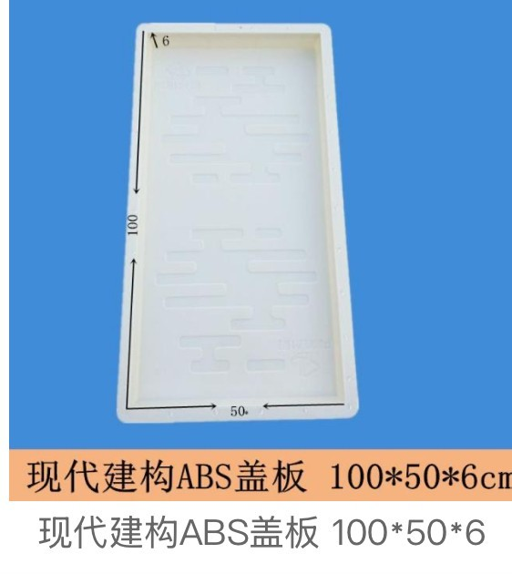
100×50×6cm smooth ABS cover mould for modern precast-yard and building-group utility trenches.
Choose cable trench covers by the trench clear opening, seat width, required thickness/load environment, how often crews need to lift the slab (lift-handle vs fixed) and whether the project is a substation, metro or tunnel.
For cover moulds, the seat detail, notch, lifting-hole positions, tread pattern and slab thickness decide whether the finished concrete cover seats correctly and can be lifted safely.
| Project scenario | Suitable mould direction | Quote information needed |
|---|---|---|
| Substation / power cable trench | Lift-handle removable cover (80×50, 138×40, 170×50…) | Trench opening, seat width, cover thickness, lifting-slot pattern, PP/ABS |
| Metro / subway platform trough | ABS metro cover 149×55 or T-junction assembly set | Platform/underpass drawing, assembly layout, demoulding requirements |
| Railway / road tunnel trough | Deep-burial cover 60×50×26 / 85×49×20 | Tunnel drawing, slab thickness, rebar/load environment, quantity by size |
Cable trench cover orders depend on the trench opening, how the cover seats and the application. Clear dimensions help us quote faster.
Send your cover drawing, trench opening size or sample photo. We will match catalogue tooling or confirm OEM mould feasibility.
Send InquiryWhatsApp NowSeveral U-channel and cable trench mould sizes, shown with the CAD section drawings and 3D models they were built from. A trench mould is always quoted from a section: internal width, internal depth, wall thickness and length. Send the section and we will confirm whether it matches existing tooling or needs a new mould.
This page is our cable trench COVER programme — removable lift-handle (提手) covers that seat on top of a concrete or brick cable trench, plus metro and tunnel trough covers. We supply the cover moulds; if you also need the U-shaped trench body mould, those are quoted separately from your section drawing (see our Drainage Channel / U-channel range).
A lift-handle cover has moulded lifting slots or pull points (e.g. 8.5×3.5cm slots) so maintenance crews can lift the slab to pull or inspect power/telecom cables, then seat it flush again — no cast-in iron frame needed. It is the standard removable cover for substations, industrial parks and utility corridors.
The cover size is set by your trench clear opening plus the seat/bearing width on each side, not by the trench width alone. A 170×50cm cover, for example, typically seats over a narrower trench. Send the trench inner width, wall/seat width and required cover thickness and we will match the mould.
PP (polypropylene) is the lower-cost choice for standard lift covers up to ~80cm and high-cycle yard production. Use ABS for large 100–170cm panels, deep 20–26cm tunnel sections and metro/T-junction assembly sets, where extra rigidity and demoulding stiffness matter.
Yes — notches (e.g. 20×1cm frame-clearance notch), lifting holes, drainage slots and cobblestone/striped anti-slip treads are all moulded directly into the part. A notch must be moulded, not cut on site, or it will crack under load.
For subway and tunnel troughs we supply multi-part assembly sets (e.g. the 60.8×59×34.4cm T-junction set, supplied with a demoulding diagram) and ultra-thick 20–26cm deep-burial covers (60×50×26, 85×49×20). These are engineered to railway/metro drawings and quoted as sets.
We do not stamp a load class on the mould — load capacity is a property of the finished reinforced concrete (rebar design, concrete grade and cover thickness). We provide the mould geometry and wall/rib design to your drawing; the structural rating is set by the precaster's concrete design.
Yes. Send the finished cover drawing (length × width × thickness), seat/notch detail, lifting-hole or handle positions, tread pattern and material preference (PP/ABS). We confirm whether it matches existing tooling or needs a new OEM mould before quotation.